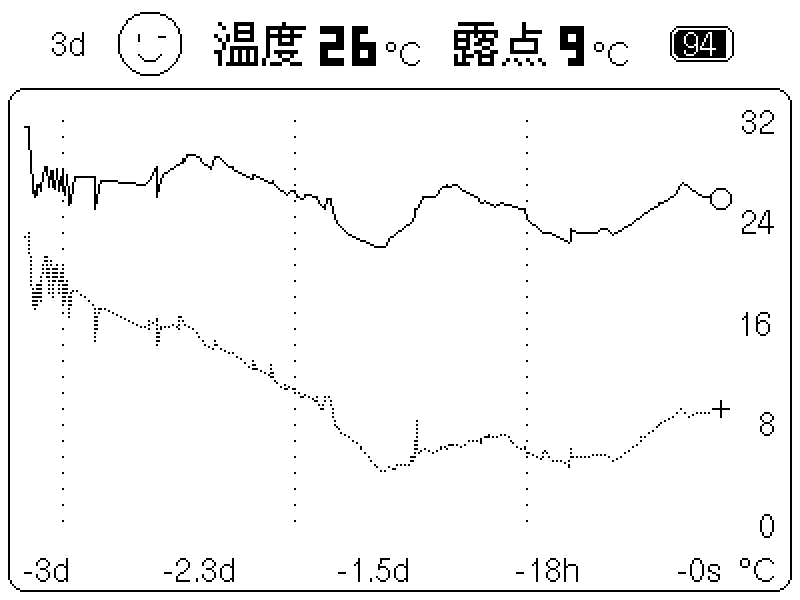
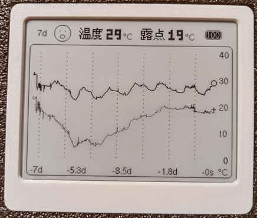
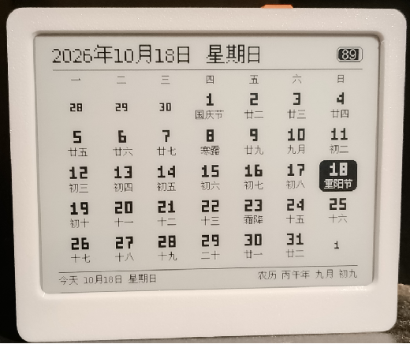
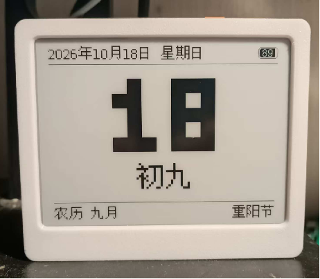
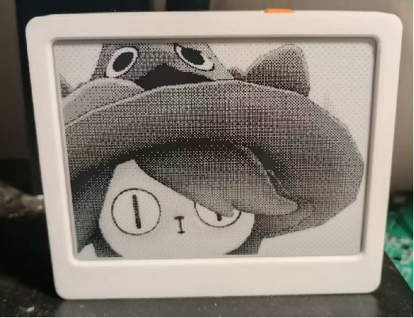

4.2 寸墨水屏温湿度记录仪（30 天 蓝牙款）
两节 7 号电池供电，不用插电或打开手机，就能在屏幕上查看温度和露点历史曲线。

- 30 天档历史曲线（实线 温度 / 虚线 露点，界面示意）
- 日期分割线：每日、每周凌晨零点；
- 显示范围档位：
- 1 / 2 / 4 / 6 / 8 / 12 小时
- 1 / 3 / 7 / 14 / 30 天（共 11 档）
样机实拍（3D 打印外壳，非量产外观）




1 产品特点
- 传感器每分钟采样，历史保存在本机
- 默认显示温度和露点，可切换到相对湿度
- 支持离线农历、公历、节假日、万年历
- 支持3张用户自定义离线壁纸
- 支持设置每周第一天、露点或湿度显示、温度变化立即刷新、日期分割线、记录间隔
- 支持蓝牙导出历史曲线点、设置壁纸、高级设置
2 主要规格
- 功耗
- 待机电流 7.5µA
- 平均刷屏 6µAh / 次
- 每分钟传感器采样 25nAh / 次
- 供电两节 7 号干电池，续航估算 1–3 年
- 传感器SHT40（Sensirion）
- 温度 ±0.2 ℃（典型）
- 湿度 ±1.8 %RH（典型，最大 ±3.5 %RH）
- 量程 −40~125 ℃ / 0–100 %RH
- 历史（约 1 万点存储）
- 30 天模式：
- 近 24 小时每分钟 1 点
- 超 24h 数据按 5 分钟抽稀存储
- 7天模式：每分钟 1 点
- 30 天模式：
- 安装背面磁吸（样机方案）
3 寻求合作
- 阶段工程样机已跑通，3D 打印外壳仅作验证、不作交付；仍需长期稳定性与续航实测
- 分工我们提供现有固件、硬件方案及后续测试迭代支持；希望与具备结构设计、供应链及制造能力的伙伴合作，共同推进产品工程化与量产落地。模具投入、物料备货及库存安排，根据具体合作模式协商确定
- 合作意向寻求具备产品结构设计与量产能力的合作伙伴，共同完成产品验证与商业化落地。合作方式（技术授权 / ODM / 委托开发）另议